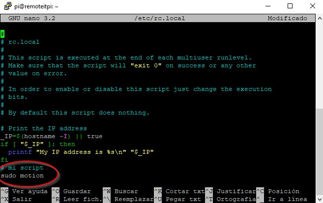
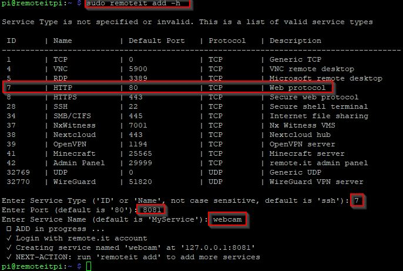
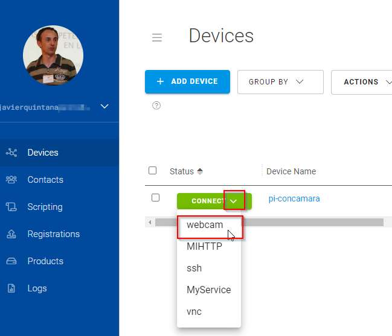
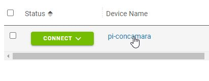
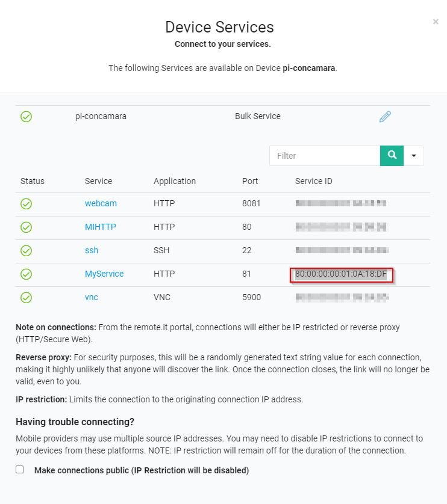
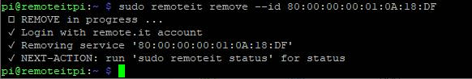

MOTION
Esta librería open-source muy utilizado en sistemas de alarma con la Raspberry
(🤔🤔🤔🤔 hacer un sistema de videovigilancia📹 de mi casa 🏠a distancia 📡 y monitorizar 📺 por muy bajo coste... 🤔 )
Se pueden encontrar proyectos interesantes como :
- Que grabe en un vídeo cuando detecta un movimiento
- Que nos envíe un email con una foto cuando detecta uno movimiento

Pero nosotros NO nos interesa que detecte movimiento, sino que simplemente haga streaming.
Para esto, simplemente modificaremos el fichero de configuración de la librería motion.conf. Es muy típico modificar ficheros de configuración tipo texto en los softwares abiertos, lo que muestra su versatilidad y potencialidad. Puedes ver las diferentes posibilidades de configuración de Motion aquí
Cómo hacerlo
Abrimos una ventana de comandos, en SSH, ya sabes cómo y ejecutamos estas órdenes:
Instalamos MOTION :
sudo apt-get install motion
Editamos el fichero de configuración motion.conf con el editor nano
sudo nano /etc/motion/motion.conf
Buscamos estas líneas y las modificamos :
- stream_localhost on lo cambiamos por off si es on sólo localhost puede abrirlo, si es off pueden todos:
- stream_localhost off
- si vemos #stream_port 8081 y como queremos abrirlo por ese puerto, le quitamos el hastag, o sea lo dejamos así,:
- stream_port 8081
- Si vemos daemon off lo cambiamos por
- daemon on
Si estuvieran estas líneas webcam_localhost on y webcam_port 8080 las borramos, o mejor las dejamos como comentarios poniendo delante un hastag # así #webcam_localhost on #webcam_port 8080.
En esta página podemos ver otra configuración de motion.conf para el mismo propósito de streaming.
Grabamos el fichero: pulsando Ctrl+X se sale pero preguntará si queremos grabar el fichero con el mismo nombre, le decimos que sí
Finalmente ejecutamos motion con esta orden
sudo motion
Si queremos que se ejecute de forma automática cuando arranque la raspberrypi editamos el fichero /etc/rc.local y al final le ponemos esa instrucción. Es decir
sudo nano /etc/rc.local y añadimos sudo motion al final (he puesto un comentario My script optativo)

¿Cómo se ve desde la red local?
Pues abrimos un navegador y ponemos la dirección a través del puerto que le hemos dicho en stream_port o sea 8081
http://---LA-DIRECCION-DE-LA-RASPBERRY--:8081
es decir si la dirección es 192.168.1.25 entonces tecleamos http://192.168.1.25:8081
Si queremos un protocolo seguro https mirar esta página
¿Y desde Internet?
Opción instalar un nuevo servicio
No se puede hacer gráficamente en la página Remote.it no sabemos por qué. Hay que hacerlo con comandos con SSH.
sudo remoteit add -h
Nos sale una lista de servicios que podemos añadir, tecleamos el ID del servicio que queremos añadir en este caso vemos en la figura que el 7 es HTTP.
Nos pide el puerto, ponemos 8081 el mismo que en Motion
Un nombre para el servicio, le hemos puesto webcam, y hecho lo que tienes que hacer en la Raspberry.

Entramos ahora en un ordenador a remote.it en nuestros "Devices" y pinchamos en el servicio que hemos creado:

Y automáticamente nos abre el navegador con la webcam funcionando

Vale, pero .. ¿y cómo se quita un servicio de Remoteit?
Entramos en al página web en el device en cuestión

Y copiamos el ID del servicio que queremos borrar:

Y ejecutamos la orden sudo remoteit remove --id y la ID que queremos borrar es decir en mi caso :
sudo remoteit remove --id 80:00:00:00:01:0A:18:DF

Opción cutre con VNC
Si lo anterior por alguna razón fallara o remote.it quita el servicio HTTP, puedes ver la cámara por VNC.
Tienes que acceder a la Raspberry desde Internet con VNC mira estos apuntes
Una vez accedido por VNC remotamente podemos abrir el navegador de la misma Raspberry y la IP de él mismo es 127.0.0.1 luego abrir
ojo en el navegador de la Raspberry no en tu ordenador.

Alphabot por varios autores bajo licencia Creative Commons Reconocimiento-NoComercial-CompartirIgual 4.0 Internacional License.